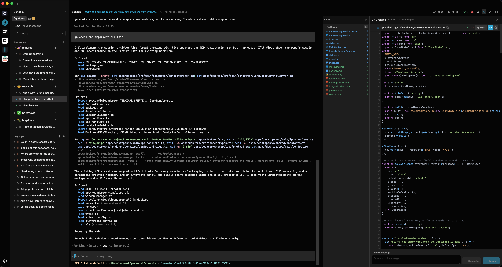

01 / CONTEXT
A place for every project.
Organize work into workspaces, projects, and session groups. Pick up a conversation where you left off.
Bring Claude Code, Codex, and your projects together.
One thoughtful workspace. From first idea to final diff.
macOS · Apple silicon and Intel
Your terminal, agents, and changes.
Finally working together.

When the work gets bigger, your workspace
should bring it together.
Organize work into workspaces, projects, and session groups. Pick up a conversation where you left off.
Give sessions their own Git worktrees. Explore a new idea while another agent moves the next task forward.
Browse files, review diffs, and stage and commit changes right beside the conversation that created them.

One desktop app. Your favorite agents.
Everything you need to keep moving.
Find the latest macOS installer on GitHub releases.
Built for Apple silicon and Intel. Requires an installed, signed-in
Claude Code or Codex CLI.